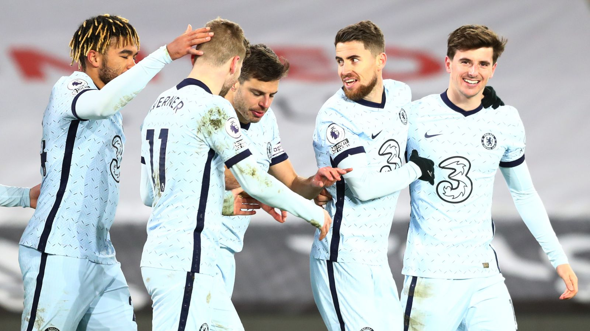
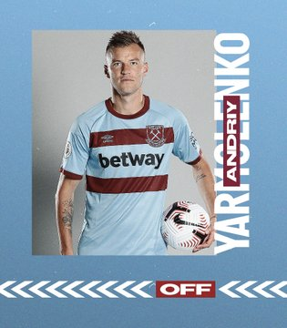
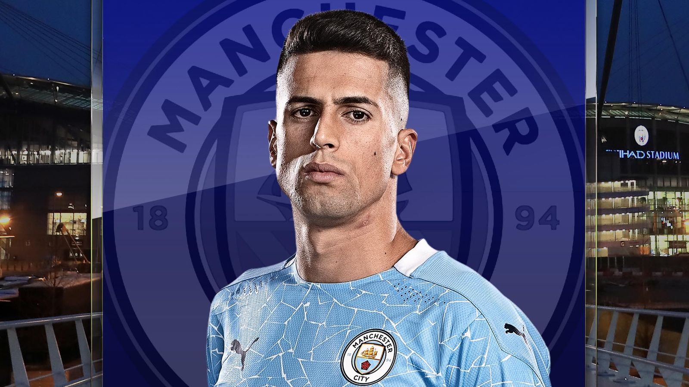

- Football is the biggest sport in the world today and the Fédération Internationale de Football Association (FIFA) World Cup is the most watched sports tournament world over.
- Football is the only ball game in the world where you can’t maneuver the ball with your hands.
- The football industry makes more money than any other sport played in the world.
- According to a report by Forbes, football clubs are the most valuable sports franchises in the world. FC Barcelona, Manchester and Real Madrid are often at the top.
- Apart from the US where the game is called ‘soccer, everywhere else in the world, it’s called football.
- The word football does not mean playing with the feet, it means the game is played on the feet and not on horseback.
- Football fans are very serious about their favourite sport. It’s been reported that a French fan once shot another fan who supported the rival team twice: One shot for each goal made by the rival team.
- It’s not known when Football actually started, but it’s believed to have started some 3,000 years ago in China where the balls were produced by sewing clothes together and filling them with rubble. In the Middle Ages, Europe made its balls from inflated pig bladders.
- Modern day footballs are made with a number of synthetic leather layers and its bladders are made with buty or latex.
- Modern day football was founded in 1863 by the British who formulated the rules.
- FIFA was formed on May 21, 1904 with the goal to govern association football internationally.
- After the Olympics did not permit professional footballers to participate in the games, FIFA established the World Cup. The first World Cup was held in 1930 in Uraguay; 13 teams competed and Uruguay won.
- The decision to hold the first ever World Cup in Uruguay did not go down very well with Europe. This resulted in European countries like Sweden, Austria, Holland, Switzerland, Spain, Hungary, Italy and Germany boycotting the tournament. Only Yugoslavia, Romania, Belgium and France played that year.
- Till date, there are only seven countries that have won the World Cup. These teams are Spain, Argentina, Italy, Germany, Uruguay, England and Argentina.
- The World Cup is held every four years since it was started in 1930, except for the 12-year break during World War II and after it.
- Brazil is the only country in the World Cup that has won more finals that anyone else.
All about Football

Chelsea's CL clash with Atletico moved to Bucharest
Match still on Tuesday, February 23, with second leg at Stamford Bridge March 17; Liverpool's away trip to RB Leipzig to be played in Budapest on February 16; Manchester City to meet Borussia Monchengladbach in Hungary a week later. The UK is implementing strict coronavirus quarantine rules around people returning from Spain, forcing Chelsea's trip to Atletico to be moved to a neutral venue. The match will still take place on Tuesday, February 23, with the second leg at Stamford Bridge still set for March 17. It follows earlier confirmation from UEFA that
Liverpool's away trip to RB Leipzig in the competition will now be played in Budapest on February 16, while Manchester City will also meet Borussia Monchengladbach in Hungary a week later.

West Ham's Diop becomes first concussion sub
Premier League introduced concussion substitutions for the first time on February 6 and the FA Cup has followed suit for fifth-round fixtures; West Ham defender Issa Diop went off at half-time following a clash of heads with Manchester United forward Anthony Martial .West Ham manager David Moyes says he 'took no chances' by deciding to take Issa Diop off in a concussion substitution during his side's FA Cup defeat to Manchester United on Tuesday
west ham vs manchester united radio
for video for full video visit youtube

Joao Cancelo's unique role at Man City explained by Pep Guardiola
ep Guardiola explained the thinking behind Manchester City's tactics at Anfield when speaking to Sky Sports afterwards. “We had to play with a slower rhythm, with more passes than usual because they are the best team in the world on transitions." It worked. Aside from the penalty, the statistics showed that Liverpool had not created so little in a home Premier League game either this season or last. The 4-1 defeat all but ends Jurgen Klopp's hopes of retaining the title. City are already being hailed as champions elect.Indeed, he has become so fundamental to his coach's thinking that he was substituted just after the hour mark in the previous game at Burnley having been rested completely for the victory over Sheffield United prior to that. Guardiola needed him fresh for Liverpool. Ruben Dias is credited with organising the defence, although his error in conceding the penalty showed that even he is fallible. John Stones has improved too. But the biggest reason for City's improvement is the setup. Cancelo's deployment has been crucial to that. if you want to see joao's gameplay visit youtube Click here